Языковой год: пять вузов без глянца
Что реально написано на сайтах Нанкинского, Сучжоуского, Чунцинского университетов, Тяньцзиньского иняза и Ханчжоуского педагогического — про программу 长期汉语进修, подачу, цену, общежитие и среду. Без рекламных слов; там, где вуз чего-то не публикует, так и сказано.
Сводная таблица
| Вуз | Статус | Учёба / семестр | Общежитие (двухместная) | Весенний набор | Что требуют сверх обычного | Год примерно |
|---|---|---|---|---|---|---|
| НанкинскийNJU南京大学 | C9, 985 | 10 500 ¥ | 52 ¥/сутки, кампус Гулоу не гарантировано | есть подача 10.10–25.12 | ничего — паспорт, диплом, мотивационное | ≈ 38 000 ¥ |
| СучжоускийSUDA苏州大学 | 211 | 8 500 ¥ | 800 ¥/мес (4 000 ¥/сем) «по возможностям вуза» | есть брошюра выходит осенью | ничего лишнего, оплата по приезде | ≈ 27 000 ¥ |
| ЧунцинскийCQU重庆大学 | 985 | 8 000 ¥ | 2 500–3 500 ¥/сем кто первый | есть до 30 ноября | справка о средствах ≥ 30 000 ¥, 2 рекомендации, медкомиссия, несудимость | ≈ 21 000 ¥ |
| Тяньцзиньский инязTFSU天津外国语大学 | языковой профильный | 6 700 ¥ | 50 ¥/сутки без брони, обязательно | есть до 31 декабря | депозит в банке ≥ 20 000 ¥, медкомиссия, несудимость; учёба оплачивается до выдачи приглашения | ≈ 30 000 ¥ |
| Ханчжоуский педHZNU杭州师范大学 | провинциальный ключевой | 7 500 ¥ | 75 ¥/сутки (60 — трёхместная) обязательно | не найден только осень, окно 15–30 мая | гарантийное письмо спонсора, медкомиссия, несудимость, антинаркотическое обязательство | ≈ 39 000 ¥ |
Нанкинский университет
NJU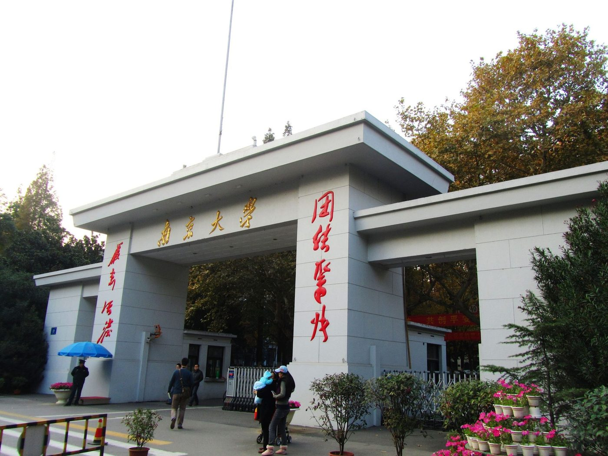
Программа
Ведёт Институт зарубежного образования (海外教育学院). 20 академических часов в неделю, учиться можно от одного семестра до двух лет. Уровни: стартовый, начальный, средний, плюс для продвинутых — «китайский +» с модулями «история Китая» и «современная экономика и торговля» (в него пускают только по результату онлайн-теста на сайте института, нужен продвинутый уровень). Группы малые, вуз пишет «因材施教» — обучение с учётом уровня каждого.
- Языковые курсы: комплексный китайский (нач./ср./продв.), аудирование и говорение (нач./ср./продв.), письмо (ср./продв.), чтение прессы (ср./продв.).
- Курсы о стране: деловой китайский среднего и продвинутого уровня, китайский на компьютере, китайский через кино, иероглиф и культура, обсуждение горячих тем, классическая поэзия, краткая история Китая, современная литература.
- Практика: тайцзи, чайная церемония, вырезание из бумаги; поездки по Нанкину и окрестностям; общение с китайскими студентами, конкурсы чтения и речей, учебные экскурсии.
- Где: кампус Гулоу — исторический центр города, а не загородный Сяньлинь. Это плюс для жизни и минус для цены жилья (см. ниже).
Подача
Полностью онлайн, бумаги не шлют. Весенний семестр: заявки с 10 октября по 25 декабря, но «额满为止» — приём закрывают, когда места кончились, так что тянуть до декабря нельзя. Осенний: 10 марта — 25 июня. Возраст от 18, требования по HSK не заявлены. Начало занятий — февраль и сентябрь, точная дата в приглашении.
- Документы: скан паспорта (и китайской визы, если есть), документ о высшем образовании (не на китайском/английском — с нотариальным переводом), личное заявление по шаблону вуза. Никаких справок о деньгах, несудимости и медкомиссии на этапе подачи — самый лёгкий пакет из пяти.
- Как идёт: первичный ответ в течение 5 рабочих дней → оплата регистрационного взноса 500 ¥ (не возвращается) → письмо с решением → в течение месяца электронное приглашение и форма JW202/DQ для визы. Отказ тоже присылают письмом.
- Взносы: регистрация 500 ¥, страховка 400 ¥/семестр, учебники по факту.
- Подсадка в октябре: на странице краткосрочных курсов есть понедельный тариф — 2 000 ¥ за первые две недели, дальше 1 000 ¥/неделя (данные страницы 2022 года, уточнить). Это вариант заехать в октябре 2027, не дожидаясь февраля.
Общежитие
У вуза три адреса для иностранцев, но языковым студентам подходят только два — оба в Гулоу: 西苑 (ул. Шанхай, Цзиньинь 20) и 平仓巷 1, корп. 2/3. Загородный Сяньлинь (3 000 ¥/семестр) вуз прямо отдаёт дипломникам и обменным студентам — на него не рассчитывать.
- Цена: двухместная 52 ¥/сутки за место, одноместная 67 ¥/сутки. Платить за весь срок сразу (WeChat/Alipay), при досрочном выезде удерживают 1 000 ¥ и остаток месяца. Депозит 550 ¥ за имущество + 50 ¥ за ключ — наличными. Электричество покупается отдельно.
- В комнате: матрас есть, постельного нет — одеяло и подушку везти или покупать.
- Главный риск: вуз пишет дословно «鉴于宿舍房源不足，新入境自费生将不保证都能预订到学生宿舍» — мест не хватает, новым платным студентам общежитие не гарантируют. Бронь открывается в середине января (на весну) и в начале августа (на осень) на istudy.nju.edu.cn; удалось внести бронь — место есть, не удалось — снимать самому. Вуз даже называет переходную гостиницу (古南都亦闲公馆, ул. Шанхай 160) и приложения для аренды. Съём рядом с Гулоу — 2 500–5 000 ¥/месяц.
- Правила: гости с 8:00 до 22:00 и только своего пола, вернуться до 24:00, готовить в комнате нельзя, электроприборы мощнее 1 кВт запрещены. Если сосед съехал — подселят нового, либо платишь за всю комнату.
Среда и город
Лига C9, ARWU 2026 — №70 в мире и №6 в Китае. Для языкового года это означает не рейтинг, а среду: в Гулоу учатся 1 389 иностранцев (октябрь 2024) со всех программ, есть Хопкинс-Нанкинский центр с американцами, крепкая библиотека. Нанкин — бывшая столица, ~9,5 млн, чистый путунхуа на улице (нанкинский говор близок к северному), до Шанхая 1 ч 15 мин скоростным. Летом жарко и влажно, зимой сыро без центрального отопления.
Что хорошо
- Самый простой пакет документов и ответ за 5 дней
- Занятия в центре города, а не в пригороде
- Прозрачные цены и правила общежития, всё на сайте
- Есть понедельный тариф для позднего заезда
Что плохо
- Самая дорогая учёба из пяти — 21 000 ¥/год
- Общежитие не гарантировано, дешёвый Сяньлинь недоступен
- 52 ¥/сутки — это ~15 600 ¥ за 10 месяцев, дороже Сучжоу вдвое
- Бронь общежития только в январе, за месяц до заезда — план Б нужен заранее
Год с февраля 2028 по январь 2029, прикидка
| Учёба, 2 семестра | 21 000 ¥ |
| Двухместная в Гулоу, 300 суток × 52 ¥ | 15 600 ¥ |
| Регистрация + страховка за год | 1 300 ¥ |
| Депозиты (возвращаются) | 600 ¥ |
| Итого без еды, учебников и перелёта | ≈ 38 500 ¥ · ≈ 514 000 ₽ |
Сучжоуский университет
SUDA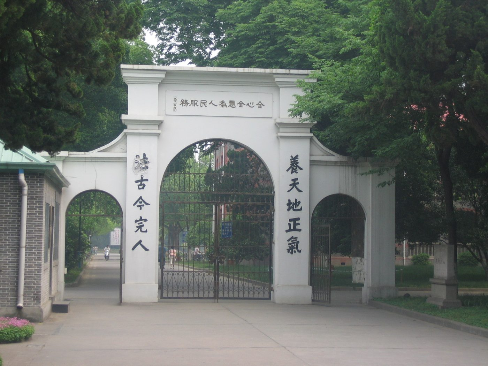
Программа
Ведёт Институт зарубежного образования (海外教育学院) — отдельное подразделение только под язык и культуру, 20 с лишним штатных преподавателей, большинство с опытом работы за рубежом. Группы малые, деление на 7 уровней по HSK: сдал HSK 3 — попадёшь в группу третьего уровня, а не «начальную для всех».
- Обязательные: комплексный китайский (грамматика, иероглифика, письмо) и устный (аудирование, диалог). По расписанию-образцу это две пары каждое утро с понедельника по пятницу, 8:45–12:00 — 20 академических часов в неделю.
- По выбору: аудирование и чтение трёх ступеней, основы иероглифики, постановка произношения и тонов, география и обычаи Китая, кино, идиомы 成语 — 2–3 пары в неделю после обеда, набор меняется по семестрам.
- Культура: 4–6 занятий в семестр с музеями и культурными организациями; бесплатные мероприятия (готовка, праздники, «международный день Сучжоу»); поездки со скидкой — сады Сучжоу, Шанхай, Ханчжоу, Уси, Нанкин, Учжэнь.
- Где: главный кампус на ул. Ганьцзян Восточная 333 — центр старого Сучжоу, до восточного кампуса с общежитиями рядом.
Подача
Образец — осенняя брошюра 2026: заявки 1 апреля — 30 сентября, занятия 14 сентября — 8 января. Весенние брошюры вуз тоже публикует (за весну 2026 была отдельная страница, осенью её перезаписали на осенний набор), ждать её примерно в октябре 2027 с датами на февраль 2028. Возраст 16–60, аттестат/диплом, здоровье.
- Документы: паспорт (и виза, если уже в Китае), документ об образовании, выписка оценок, справка с места учёбы или работы. Ни депозита, ни несудимости, ни медкомиссии заранее.
- Как идёт: регистрация на iaa.suda.edu.cn или suda.17gz.org → проверка → электронное приглашение и форма для визы письмом → виза дома → приезд к дате из письма → взнос 500 ¥ и учёба оплачиваются на месте при регистрации (Alipay или карта UnionPay). Ничего не переводится за границу заранее — это редкость.
- Взносы: регистрация 500 ¥, учебники 100–260 ¥ в год. Страховка и виза в цену не входят.
Общежитие
Апартаменты для иностранцев на восточном кампусе: корпуса 1 (женский), 2 (мужской), 3 (смешанный) — 164 мужских и 125 женских блоков, всего около 560 мест. В блоке одна комната и свой санузел; есть кровати, стол, кондиционер, водонагреватель, холодильник, телевизор, чайник, розетка интернета. Бесплатно в месяц: 50 кВт·ч электричества, 4 т воды, 300 часов интернета, сверх — доплата.
- Цена: двухместная 800 ¥/месяц (в каникулы 500), или 4 000 ¥ за семестр; одноместная 1 400 ¥/месяц, 7 000 ¥/семестр. Платят раз в семестр. Если заехал раньше даты регистрации — посуточно: 40 ¥ двухместная, 60 ¥ одноместная. Депозит за ключ 200 ¥. По желанию — комплект постельного за 400 ¥ и карта кампуса за 20 ¥ (столовые, магазин, библиотека).
- Как получить: письмом на interdorm@suda.edu.cn — указать тип комнаты, сроки, контакты, на любом языке. Страница платежей вуза добавляет: «宿舍资源紧张，校内住宿由学校根据实际情况安排» — мест мало, распределяет вуз. Гарантии нет, но и отказа заранее нет; писать сразу после приглашения.
- Правила: дверь закрывают в 22:30 по будням и 23:30 в выходные — самый ранний комендантский час из пяти; готовить в комнате нельзя; сосед съехал — в течение недели подселят или платишь за второе место; продление на следующий семестр оформлять за две недели до конца, иначе комнату отдадут.
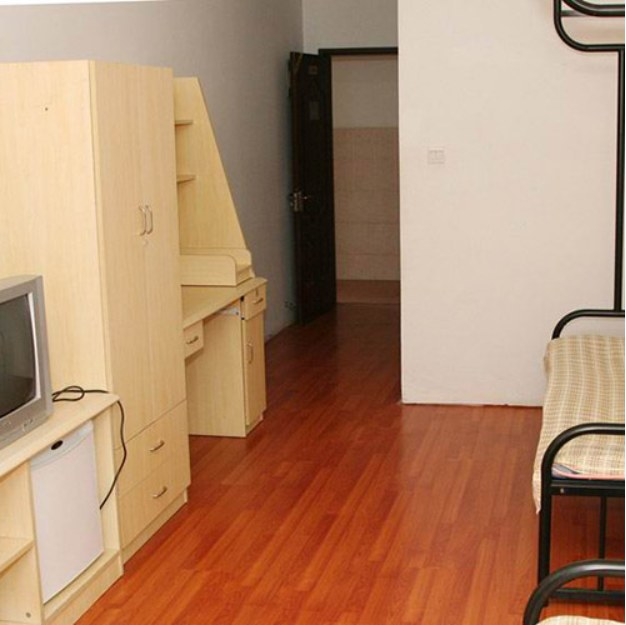
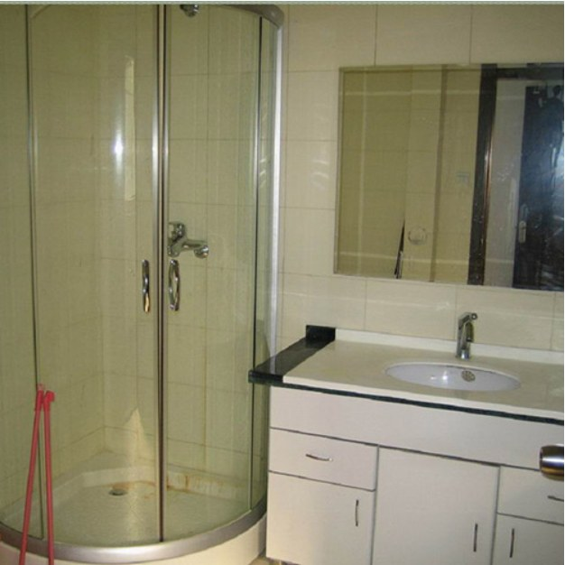
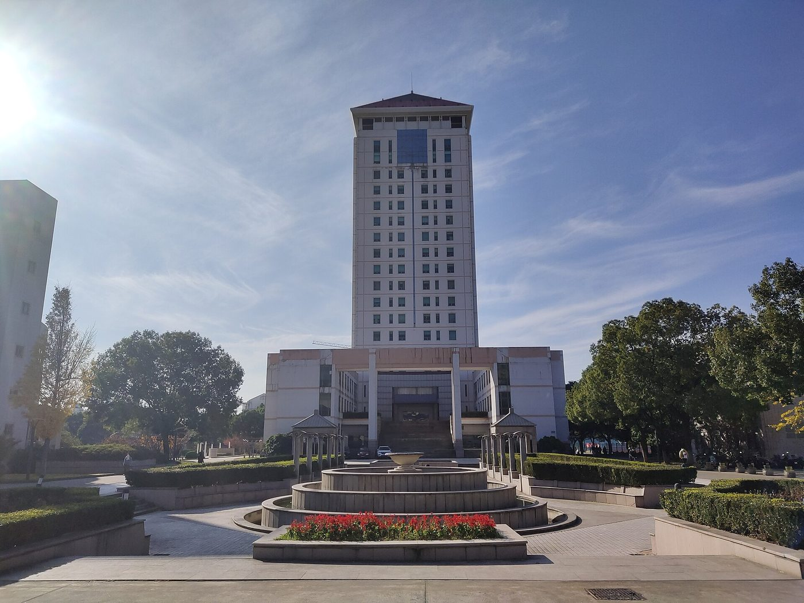
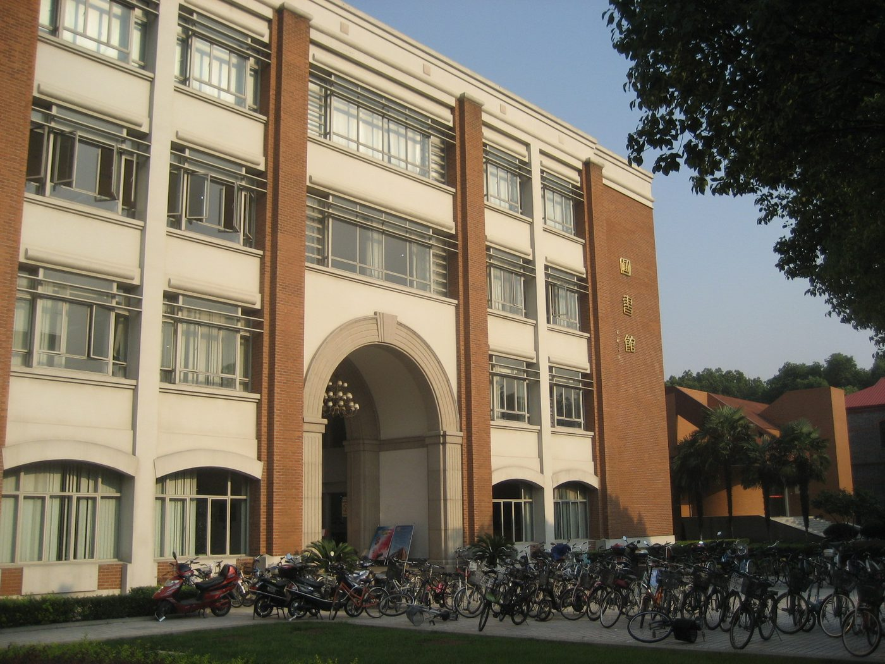
Среда и город
Проект 211, один из старейших вузов страны (1900). Вуз пишет о себе, что входит в «десятку самых красивых кампусов Китая» — это его собственная формулировка, не рейтинг. Иностранцев принимают более 2 000 человек в год, связи с 200+ вузами в 30 странах. Сучжоу — 13 млн жителей, самая сильная экономика среди городов провинциального подчинения, 25 минут до Шанхая скоростным. На улице — сучжоуский диалект группы У, который не поймёшь даже с HSK 5; в аудитории и в городе с молодёжью — путунхуа.
Что хорошо
- Самое дешёвое жильё из пяти — 4 000 ¥ за семестр в центре города
- Деление на 7 уровней по HSK, а не три ступени
- Никаких справок о деньгах, оплата по приезде
- Ближе всех к Шанхаю
Что плохо
- Мест в общежитии ~560, распределяет вуз — писать первым
- Комендантский час 22:30 по будням
- Фото общежитий на сайте 2015 года — реальный вид не известен
- Точные даты весеннего набора появятся только осенью 2027
Год с февраля 2028 по январь 2029, прикидка
| Учёба, 2 семестра | 17 000 ¥ |
| Двухместная, 2 семестра × 4 000 ¥ | 8 000 ¥ |
| Регистрация + учебники + страховка (~800) | ≈ 1 500 ¥ |
| Депозит за ключ (возвращается), постельное | 600 ¥ |
| Итого без еды и перелёта | ≈ 27 000 ¥ · ≈ 360 000 ₽ |
Чунцинский университет
CQU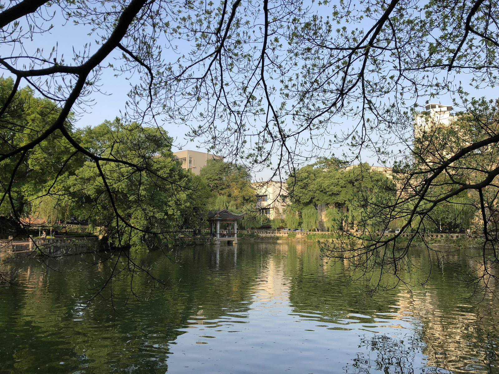
Программа
Брошюра обновлена в январе 2026 — самая свежая из пяти. Курс ведёт Институт иностранных языков (外国语学院), по окончании выдают свидетельство о прохождении (结业证书). Весенний семестр — с конца февраля до начала июля, осенний — с начала сентября до середины января; 16–17 недель, из них две — экзамены. Уровень определяет входной тест.
- Обязательные: 20 часов в неделю — комплексный китайский, устная речь, аудирование, письмо, чтение.
- По выбору (1–2 в семестр): каллиграфия и живопись, ушу, культура Китая, чтение новостей, подготовка к HSK, деловой китайский.
- Где: кампус A (沙坪坝校区, ул. Шачжэн 174) — старый центральный кампус на холме над рекой Цзялин; международный отдел в главном учебном корпусе, каб. 310.
Подача
Самый тяжёлый пакет из пяти, зато сроки понятные и одинаковые каждый год: весна — до 30 ноября, осень — до 10 июня. Возраст 18–55, аттестат/диплом. Подача через cqu.17gz.org: категория «普通进修生», специальность «汉语言», взнос 600 ¥ онлайн; без оплаты заявку не рассматривают. Возможно собеседование.
- Документы (все на китайском или английском, иначе нотариальный перевод): паспорт со сроком действия больше года; нотариально заверенный диплом; выписка оценок; подтверждение средств не меньше 30 000 ¥; медкомиссия по форме 外国人体格检查表 с анализами, ЭКГ и флюорографией (действует 6 месяцев); справка о несудимости не старше 6 месяцев; справка с учёбы или работы; два рекомендательных письма с подписью и контактами; учебный план (о себе, мотивация, цели); что-то ещё по запросу вуза. Оригиналы везти с собой и показать при регистрации.
- Взносы: подача 600 ¥, страховка 800 ¥/год.
- Стипендия Международного китайского преподавателя (国际中文教师奖学金) — покрывает учёбу, общежитие, страховку и выплаты; вуз её принимает.
Общежитие
Четыре корпуса для иностранцев. На кампусе A — 松林坡国际公寓 и 柑园村国际学生公寓, на новом кампусе Хуси — 兰园6舍 (он далеко, языковым он не нужен). В каждой комнате свой санузел, кондиционер, кровать с матрасом, стол, шкаф; Wi-Fi платный. На этаже общая кухня и прачечная (монеты или карта).
- Цены (таблица вуза): 松林坡 — двухместная 2 500 ¥/семестр (4 750 ¥/год), одноместная 4 500 ¥/семестр (8 500 ¥/год); 柑园村 — двухместная малая 3 000 ¥/семестр (6 000/год), большая 3 500 ¥/семестр (7 000/год). В брошюре 2026 диапазон 2 500–4 000 ¥/семестр и пометка, что цены могут поднять.
- Как получить: «先申请先得» — кто первый подал, тот и живёт; стипендиатам дают бесплатно, платники подают заявку или снимают жильё. Съём разрешён, но с регистрацией: договор → в течение 24 часов в участок за 临时住宿登记 → копии в международный отдел.
- Что заметно на фото: 柑园村 после ремонта — светлые комнаты с новой мебелью и большой кухней; 兰园 и 松林坡 — старше и проще.
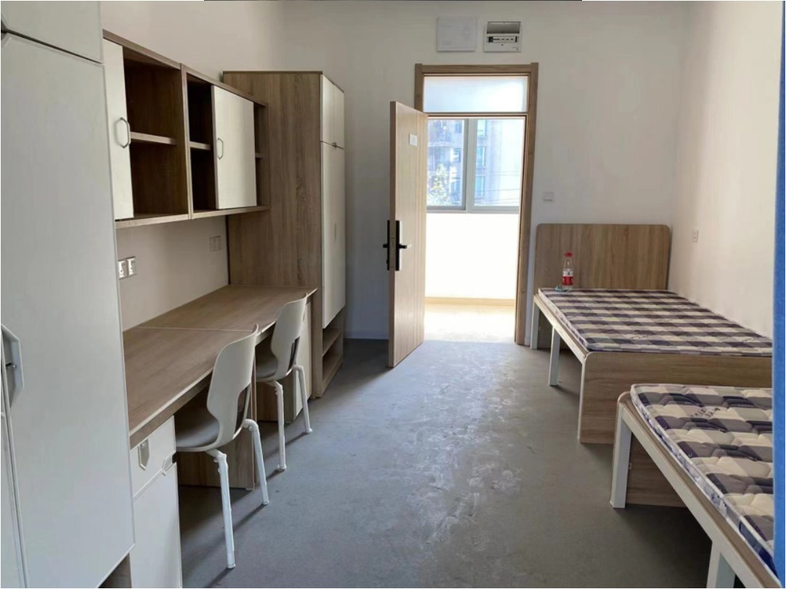
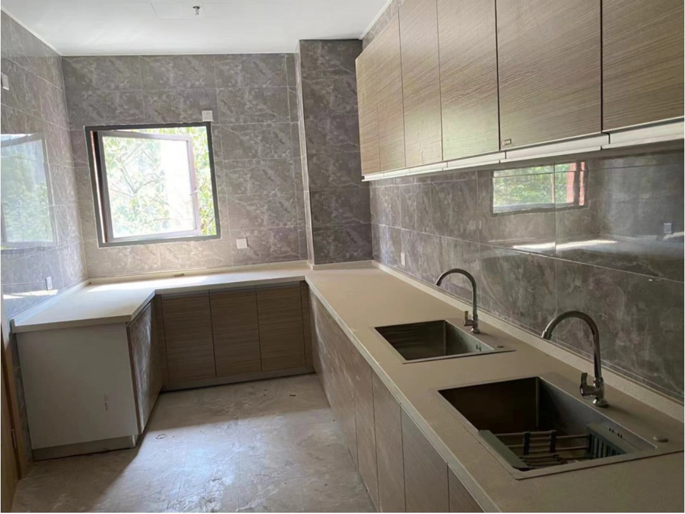
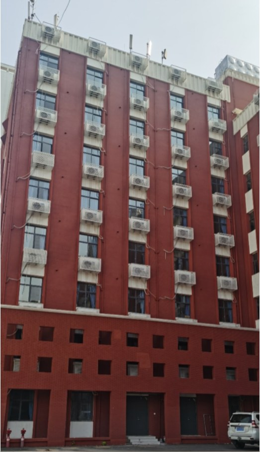
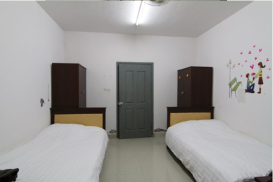
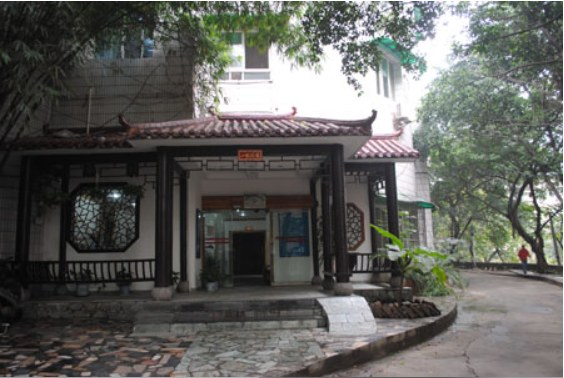
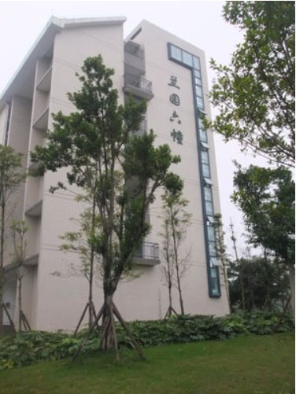
Среда и город
Проект 985 и 211, один из старейших вузов Юго-Запада. Языковой курс здесь — побочная программа большого инженерного вуза, а не отдельный институт под иностранцев, как в Нанкине или Сучжоу; число иностранцев на сайте не публикуется. Чунцин — 32 млн жителей в границах города-провинции, горы, две реки, метро-монорельс через дома, самый дешёвый по жизни из пяти городов. Лето 35–40°, влажно. На улице говорят на юго-западном мандарине — это диалект путунхуа, а не отдельный язык, понять можно, но тона и лексика заметно свои. До Шанхая — 11 часов скоростным или 2,5 часа самолётом.
Что хорошо
- Самый дешёвый год из пяти — около 21 000 ¥ вместе с жильём
- Понятные ежегодные дедлайны и свежая брошюра (январь 2026)
- В факультативах есть подготовка к HSK
- Двухместная за 2 500 ¥ в семестр с санузлом
Что плохо
- Справка о 30 000 ¥ — больше, чем у Тяньцзиня
- 10 документов: медкомиссия, несудимость, две рекомендации, план
- Далеко от Шанхая и от остальных четырёх
- Общежитие — кто первый, гарантии нет; Wi-Fi платный
Год с февраля 2028 по январь 2029, прикидка
| Учёба, 2 семестра | 15 000 ¥ |
| Двухместная 松林坡, год | 4 750 ¥ |
| Взнос за подачу + страховка | 1 400 ¥ |
| Итого без еды и перелёта | ≈ 21 200 ¥ · ≈ 283 000 ₽ |
Тяньцзиньский университет иностранных языков
TFSU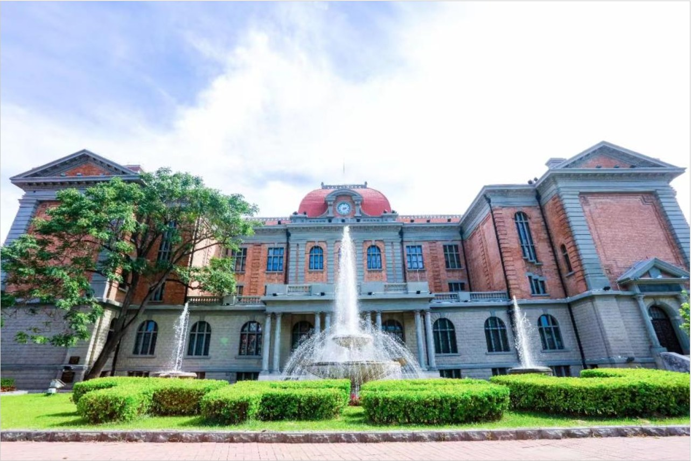
Программа
Профильный языковой вуз: один из восьми «традиционных иностранных» университетов страны, 31 иностранный язык, 10 Институтов Конфуция за рубежом (в том числе в России). Языковой курс — семестр или год, семестр 16–18 недель. Три ступени, каждая разбита на 2–3 подгруппы; распределение по письменному и устному тесту при заезде. Количество часов в неделю в брошюре не указано.
- Начальный: ~1 000 слов и 180 грамматических тем; интенсивное чтение, разговор, аудирование, чтение, иероглифика.
- Средний: ~3 000 слов и 280 тем; те же предметы среднего уровня — сюда попадёшь с HSK 3–4.
- Продвинутый: ~5 000 слов и 380 тем; плюс аудиовизуальный курс, письмо, перевод на общие темы.
- Факультативы: каллиграфия, тайцзи, ушу, пекинская опера, обычаи, резьба печатей, вэньянь для начинающих, новая история Китая, перевод классики, современная литература, деловой китайский.
Подача
Образец — весенняя брошюра 2026: заявки до 31 декабря, регистрация в начале марта. Возраст 18–60. Портал tfsu.at0086.cn. Порядок необычный: заявка → проверка → оплата учёбы → только потом приглашение и JW202 → виза → приезд. То есть 6 700 ¥ переводятся до того, как ты получишь приглашение; все взносы не возвращаются.
- Документы: паспорт, действующий дольше 15 сентября года заезда; медкомиссия по форме; справка о несудимости; справка из банка о вкладе не меньше 20 000 ¥ — своём или поручителя. Не на китайском/английском — нотариальный перевод.
- Взносы: регистрация 500 ¥, страховка 400 ¥/семестр или 800 ¥/год.
- Виза: вуз напоминает, что X2 (до 180 дней) нельзя превратить в вид на жительство — на полный год нужна X1 и медосмотр в Китае.
Общежитие
Международный центр (国际交流中心) на 600+ мест, построен в 2011. Все комнаты двухместные, стандартные: спальня и санузел, центральный кондиционер, бесплатный интернет (роутер покупаешь сам, ставит комендант), телефон, стол, стул, шкаф, душ с горячей водой круглосуточно. На этажах кухня и прачечная, на первом этаже — холл с Wi-Fi. Кровать 1,2 × 2 м; постельное дают: подушка, одеяло, матрас, простыня.
- Цена: 50 ¥/сутки с человека для тех, кто на семестр и дольше — ≈ 7 500 ¥ за семестр, ≈ 15 000 ¥ за 10 месяцев.
- Бронь не нужна — зачисленный просто заселяется. Обратная сторона: «原则上需校内住宿» — жить в общежитии обязательно, новичкам снимать не разрешают.
- Фото: вуз показывает только холл первого этажа; фото комнат на сайте нет.
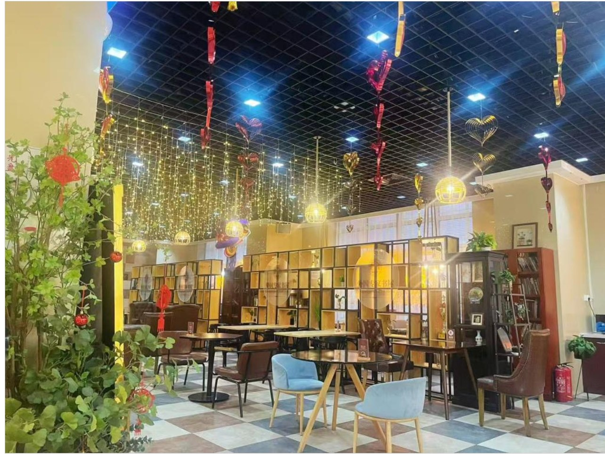
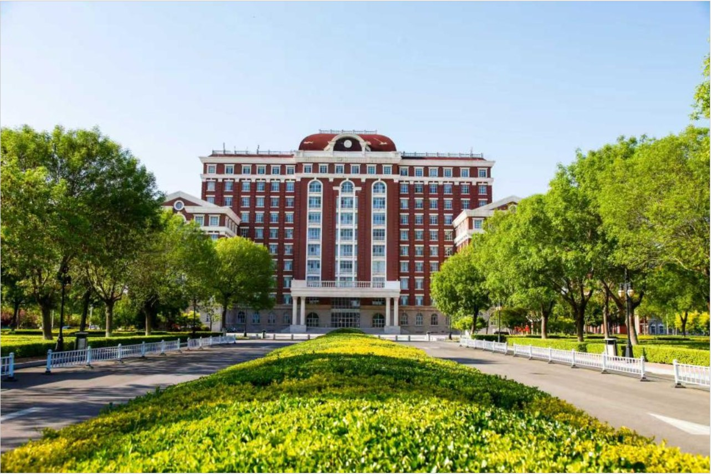
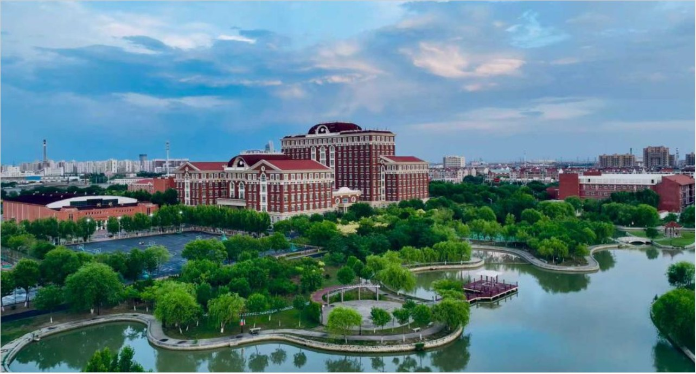
Среда и город
Два кампуса: Удадао — три двора среди исторических особняков бывших концессий, самый центр (адрес международного отдела — Мачандао 117, значит языковые там); Биньхай — новый, в 50 км, в портовом районе. Более 10 000 своих студентов, 700+ преподавателей, у 60% опыт работы за рубежом. Иностранцев 2 000+ в год, больше половины из стран «Пояса и пути», 80% на стипендиях — то есть платников, как ты, меньшинство. Тяньцзинь — 13,6 млн, порт, 30 минут до Пекина скоростным; местный говор шумный, но это северный диалект, ближе к путунхуа, чем любой из четырёх других городов.
Что хорошо
- Дешевле всех учёба — 13 400 ¥/год
- Общежитие гарантировано, без брони, с постельным
- Языковой вуз: преподавание китайского как иностранного — основной профиль
- Север — самый чистый путунхуа на улице
Что плохо
- Справка о 20 000 ¥ на счету обязательна
- Учёбу платят до приглашения и не возвращают
- Жильё 50 ¥/сутки — дороже Сучжоу и Чунцина, съезжать нельзя
- Часы в неделю не опубликованы; фото комнат нет
Год с марта 2028 по январь 2029, прикидка
| Учёба, 2 семестра | 13 400 ¥ |
| Двухместная, 300 суток × 50 ¥ | 15 000 ¥ |
| Регистрация + страховка за год | 1 300 ¥ |
| Итого без еды и перелёта | ≈ 29 700 ¥ · ≈ 397 000 ₽ |
Ханчжоуский педагогический университет
HZNU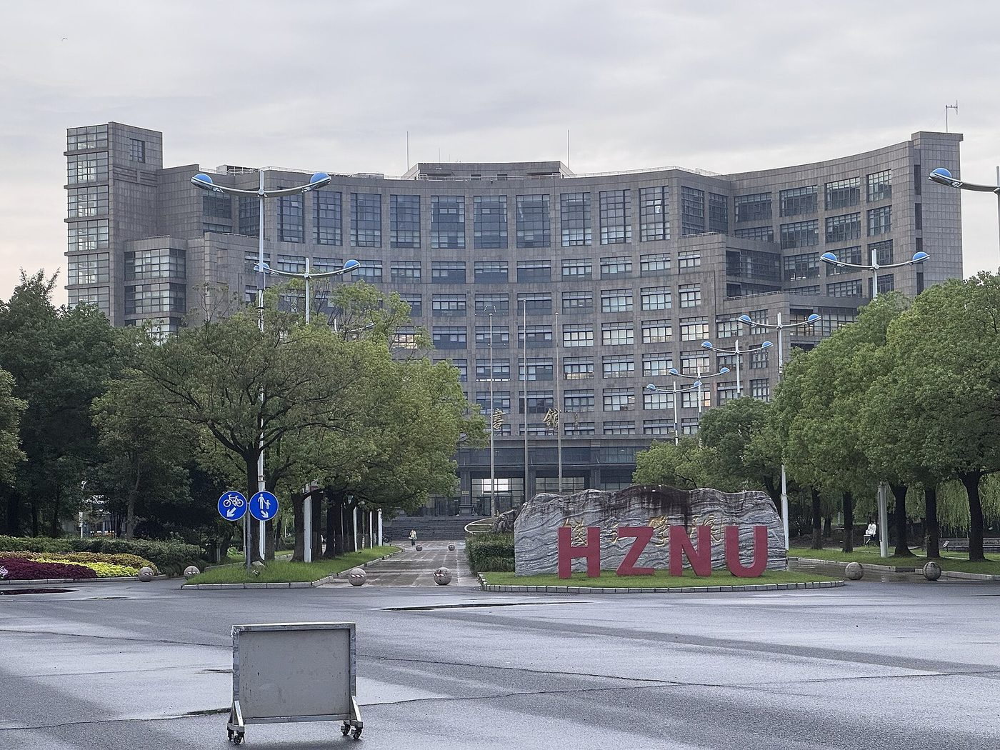
Программа
Ведёт Институт международного образования (国际教育学院, с 2008 года). Про сам курс брошюра говорит мало: программа «长期汉语言进修生», семестр или год, малые группы; в описании института — весь преподавательский состав с докторскими степенями и опыт с 1993 года. Часы, уровни, список предметов не опубликованы — это надо спрашивать письмом.
- Где: кампус Цанцянь, район Юйхан, Юйхантанлу 2318 — новая часть города, около 20 км от Западного озера и центра; корпус института 2013 года с мультимедийными классами, центром самоподготовки, библиотекой — и общежитием для иностранцев внутри.
- Формальность визы: на год выдают JW202 (виза X1), на семестр — DQ (X2).
Подача
Главная проблема: в открытых документах за три года — 2024, 2025 и 2026 — есть только осенние наборы. Брошюра 2026: подача с 15 по 30 мая, регистрация в начале сентября. Для заезда в феврале 2028 этот вуз пока не подходит — если только письмом не подтвердят весенний приём. Возраст 18–35 (единственный вуз с верхней планкой 35).
- Документы (только через international.hznu.edu.cn, по почте не принимают): паспорт со сроком от 6 месяцев; справка о несудимости не старше 6 месяцев; медкомиссия с флюорографией и анализом крови; антинаркотическое обязательство с подписью от руки; гарантийное письмо спонсора по форме вуза (не банковская справка, а подписанная форма); аттестат и оценки за школу. После отправки дослать ничего нельзя.
- Как идёт: проверка → предварительное зачисление → в течение недели оплатить взнос 400 ¥, иначе снимут → электронное приглашение в системе (с июня для осени) → учёба 7 500 ¥ оплачивается в течение недели после регистрации, не возвращается.
- Взносы: подача 400 ¥, страховка 400 ¥/семестр или 800 ¥/год.
Общежитие
Вуз принимает «только тех, кто согласен жить в кампусе». С 2026 года всех новых языковых студентов селят в гостиницу Международного центра (国际交流中心宾馆): двухместная 75 ¥/сутки с человека, трёхместная 60 ¥/сутки; вода и электричество включены, платят сразу за семестр или год. В описании института: в комнатах холодильник, кондиционер, Wi-Fi, свой санузел, есть служба сопровождения. Это самое дорогое жильё из пяти — 22 500 ¥ за 10 месяцев в двухместной.
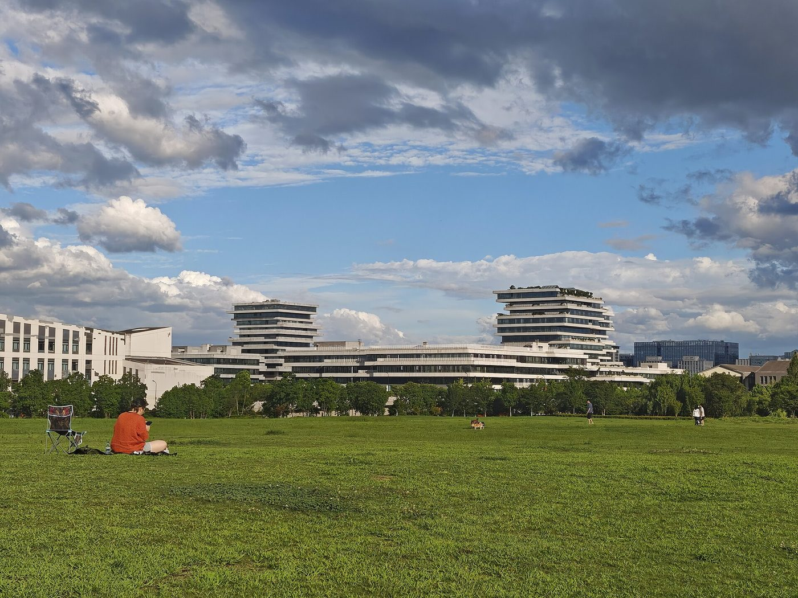
Среда и город
Провинциальный ключевой вуз, 32 491 студент, из них около 650 иностранцев на дипломных программах и ~400 иностранцев всего на данный момент — самая маленькая иностранная община из пяти. Ханчжоу — 12 млн, Западное озеро, штаб-квартира Alibaba, 45 минут до Шанхая. Но кампус Цанцянь стоит в пригороде: до центра — час на метро. На улице ханчжоуский говор группы У, в вузе — путунхуа.
Что хорошо
- Учёба 15 000 ¥ — вторая по дешевизне
- Общежитие гарантировано, свет и вода включены
- Малые группы, преподаватели с докторскими степенями
- Ханчжоу — удобный и богатый город
Что плохо
- Весеннего набора нет — под твой заезд не подходит без письма
- Окно подачи две недели и только в мае
- Самое дорогое жильё — 75 ¥/сутки, 22 500 ¥ за год
- Кампус в пригороде, иностранцев мало, программа не описана
Год с сентября 2028 по июль 2029 — если ждать осени
| Учёба, 2 семестра | 15 000 ¥ |
| Двухместная, 300 суток × 75 ¥ | 22 500 ¥ |
| Подача + страховка за год | 1 200 ¥ |
| Итого без еды и перелёта | ≈ 38 700 ¥ · ≈ 517 000 ₽ |
Что из этого следует
- Под заезд в феврале 2028 подходят четыре из пяти. Ханчжоуский пед набирает только осенью, и окно подачи там две недели в мае — либо написать и получить письменный ответ про весну, либо убрать его из плана.
- Деньги на счету нужны в двух вузах: Чунцин просит подтверждение 30 000 ¥, Тяньцзинь — банковскую справку на 20 000 ¥. Нанкин и Сучжоу не спрашивают ни о чём, кроме диплома.
- Общежитие гарантировано только в Тяньцзине и Ханчжоу (там оно обязательно). Нанкин прямо пишет «не гарантируем», Сучжоу и Чунцин — «по возможности / кто первый». Значит, в Нанкине и Сучжоу писать про жильё в тот же день, что придёт приглашение.
- По деньгам за год: Чунцин ≈ 21 000 ¥ → Сучжоу ≈ 27 000 → Тяньцзинь ≈ 30 000 → Нанкин ≈ 38 500 → Ханчжоу ≈ 38 700. Разница между самым дешёвым и самым дорогим — почти 250 000 ₽.
- Единственный, где всё расписано до предметов и часов, — Сучжоу (7 уровней по HSK, расписание, состав факультативов) и Чунцин (20 часов, HSK-подготовка). Нанкин даёт 20 часов и список курсов; Тяньцзинь — уровни без часов; Ханчжоу — почти ничего.
- Дедлайны на весну 2028 по образцу: Чунцин — 30 ноября 2027, Нанкин — 25 декабря (или раньше, если мест нет), Тяньцзинь — 31 декабря, Сучжоу — ждать брошюру в октябре. Все новые брошюры проверить в сентябре–октябре 2027.